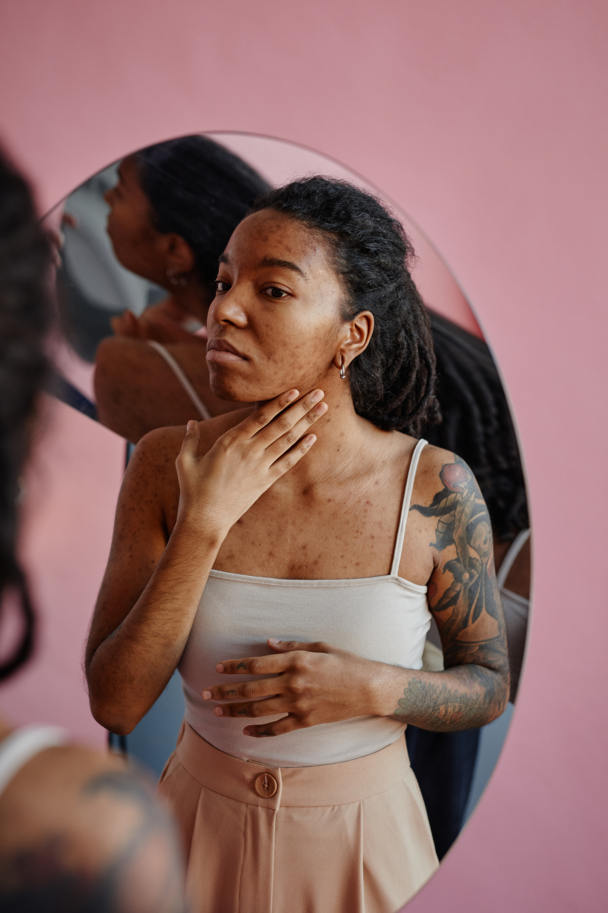

CID L02
Furúnculo
O que é, sintomas, diferenças e cuidados de vida.
O que é um furúnculo?
O furúnculo é uma infecção na pele em forma de abscesso, geralmente causada pela bactéria Staphylococcus aureus. Ele pode se parecer com uma espinha, mas costuma ser maior e mais dolorido. A infecção ocorre de forma mais profunda, atingindo não apenas o folículo piloso, mas também a glândula sebácea e os tecidos ao redor.1,2
Alguns fatores podem aumentar a incidência de furúnculos na pele, entre eles imunidade baixa, falta de higiene adequada, condições de saúde como diabetes e obesidade, além do hábito de coçar ou friccionar a pele constantemente.3
Quais são os sintomas do furúnculo?
Inicialmente, o furúnculo pode começar como um nódulo na pele, semelhante a uma espinha com pus. Com o tempo, pode crescer e se tornar mais vermelho, quente e dolorido.4
Outros sintomas podem ocorrer, como dor, calor e coceira na região, acompanhados ou não de febre baixa e mal-estar.1
O nódulo vermelho com pus é uma das formas conhecidas de manifestação do furúnculo. Geralmente, ele aparece no rosto e no pescoço, incluindo a nuca, mas também pode se desenvolver nas axilas, virilha, glúteos e coxas.3
Três sintomas que o furúnculo pode apresentar:
Calor na região2
Coceira2
Febre e mal-estar2
Classificações de diferentes lesões na pele
Foliculite
é uma infecção de pele que pode ser causada por vírus, bactérias, fungos ou até por um pelo encravado.
A maioria dos casos é superficial e afeta apenas a parte superior do folículo piloso, mas também existem formas profundas.5
Furúnculo
é um tipo de foliculite bacteriana profunda, que acomete não só o folículo piloso, mas também a glândula sebácea.
Geralmente é causado pela bactéria Staphylococcus aureus e é comum no pescoço, tórax, face e glúteos.2
Carbúnculo
ocorre quando vários furúnculos se unem e formam uma única lesão no tecido subcutâneo. Pode ser acompanhado de dor e febre.
Outros sintomas, como vermelhidão, calor e coceira na região, também podem ocorrer.3,6
Como tratar o furúnculo?
O mais importante é procurar um médico especialista.
O uso de antibióticos pode ser necessário para lidar com as bactérias e, em casos mais graves, pode ser indicado um procedimento cirúrgico para drenar o pus do furúnculo.6
A principal recomendação é sempre procurar um médico dermatologista para receber o tratamento adequado.
Será que é furúnculo?
O furúnculo pode ser confundido com outras doenças. Algumas condições podem apresentar manifestações semelhantes às do furúnculo. Por isso, é importante buscar avaliação médica para diferenciar corretamente as lesões e orientar o cuidado adequado.
Conheça a campanhaArtigos relacionados
Referências
1. Furúnculo. Sociedade Brasileira de Dermatologia. Disponível em: https://www.sbd.org.br/doencas/furunculo/. Acesso em novembro de 2024.
2. Furúnculo. Sociedade Brasileira de Dermatologia - Regional Rio de Janeiro. Disponível em: https://sbdrj.org.br/o-que-e-furunculo/. Acesso em novembro de 2024.
3. Overview: Boils and carbuncles. NCBI Bookshelf. Disponível em: https://www.ncbi.nlm.nih.gov/books/NBK513141/. Acesso em novembro de 2024.
4. Boils and carbuncles. Mayo Clinic. Disponível em: https://www.mayoclinic.org/diseases-conditions/boils-and-carbuncles/symptoms-causes/syc-20353770. Acesso em novembro de 2024.
5. Foliculite. Sociedade Brasileira de Dermatologia. Disponível em: https://www.sbd.org.br/doencas/foliculite/. Acesso em novembro de 2024.
6. Boils. WebMD. Disponível em: https://www.webmd.com/skin-problems-and-treatments/boils. Acesso em novembro de 2024.
7. Hidradenitis suppurativa. Mayo Clinic. Disponível em: https://www.mayoclinic.org/diseases-conditions/hidradenitissuppurativa/symptoms-causes/syc-20352306. Acesso em novembro de 2024.
8. Zouboulis CC, Desai N, Emtestam L, Hunger RE, Ioannides D, Juhász I, Lapins J, Matusiak L, Prens EP, Revuz J, Schneider-Burrus S, Szepietowski JC, van der Zee HH, Jemec GB. European S1 guideline for the treatment of hidradenitis suppurativa/acne inversa. J Eur Acad Dermatol Venereol. 2015 Apr;29(4):619-44. doi:10.1111/jdv.12966.
Material destinado ao público leigo. 2026 © Direitos Reservados Novartis Biociências S/A – Proibida a reprodução total ou parcial não autorizada. Atualizado em 14 de agosto de 2026.
BR-XXXXX